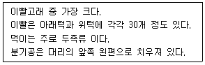

수산양식기능사 (2010-03-28 기출문제)
1과목: 수산양식
1. 대합의 종묘 발생장으로 가장 적합한 장소는?
- 풍파가 적은 조용한 내만인 곳
- 해수의 유통이 잘되는 외해에 직면한 곳
- 비교적 지반이 낮은 간석지의 사니질인 곳
- 와류가 생기기 쉬운 하구 가까이의 삼각주 부근
(정답률: 74%)

2. 잉어 양식에서 사료 공급기간을 4월부터 11월까지로 할 때 다음 중 사료를 가장 많이 투여해야 할 시기는?
- 4 ~ 5월
- 5 ~ 6월
- 7 ~ 8월
- 10 ~ 11월
(정답률: 68%)
3. 자연 상태에서 홑파래의 유주자가 가장 많이 방출되는 시기는?
- 9월 상·중순경 대조시의 아침
- 9월 상·중순경 소조시의 저녁
- 5월 상·중순경 대조시의 아침
- 5월 상·중순경 소조시의 저녁
(정답률: 67%)
4. 어류도피를 막기 위한 철망장치를 하지 않아도 될 곳은?
- 주수구
- 물넘기
- 옆물길
- 배수구
(정답률: 64%)
5. 대하 양식장에서 급이량이 부족할 때 일어나는 현상과 가장 관계가 깊은 것은?
- 탈피
- 공식
- 기형
- 잠입
(정답률: 60%)
6. 숙성이가 많이 생기는 원인과 관계가 가장 먼 것은?
- 먹이가 부족할 때
- 먹이 알갱이가 클 때
- 먹이가 고르지 못할 때
- 해적생물이 많을 때
(정답률: 70%)
7. 미역배양에 쓰이는 씨줄은 각종 합성 섬유들 중에서 어느 것이 가장 경제적이고 채묘성적이 좋은가?
- 크레모나사 8 합사
- 폴리에틸렌 20 합사
- 크레모나사 36 합사
- 폴리에틸렌 10 합사
(정답률: 40%)
8. 김사상체 배양관리기간 중 수온의 변화에 따른 조도 조절이 맞는 것은?
- 수온 상승에 따라 어둡게 한다.
- 수온 상승에 따라 밝게 한다.
- 수온과는 관계없이 성장과정에 따라 조절한다.
- 수온과 관계없이 일정조도를 유지한다.
(정답률: 60%)
9. 김의 봉투식 채묘의 장점이 아닌 것은?
- 포자의 손실이 적다.
- 부착밀도를 조절할 수 있다.
- 균일하게 포자가 붙는다.
- 채묘된 것을 봉투 속에 그대로 넣어서 양식하여도 성장이 빠르다.
(정답률: 58%)
10. 잉어 양성 방법 중 소규모로 가장 좋은 효과를 볼 수 있는 양식 방법은?
- 정수식 양성
- 유수식 양성
- 가두리 양성
- 순환여과식 양성
(정답률: 44%)
11. 미역채묘를 위해 포자엽을 선택할 때 포자엽의 조건으로 가장 적합하지 않은 것은?
- 진한 갈색으로 가장 자리의 색이 진한 것
- 가능한 크고 두꺼운 것
- 황갈색이고 단단하며 점액이 적은 것
- 부드럽고 연한 것
(정답률: 66%)
12. 다음 중 굴의 수하식 양식에 가장 좋은 채묘기 재료는?
- 자갈
- 나뭇가지
- 패각(조가비)
- 섬유류
(정답률: 66%)
13. 바닥양성된 조개류의 수확 용구가 아닌 것은?
- 드레지
- 조개틀
- 형망
- 레이크
(정답률: 68%)
14. 붕어 알을 부화시킬 때 알받이 1m2당 수용하기에 가장 적정한 알의 수는?
- 1500개
- 15000개
- 150000개
- 1500000개
(정답률: 67%)
15. 굴이 산란하여 부착기까지 소요 시간에 영향을 주는 환경 요인과, 굴 유생의 공간적 분포에 영향을 주는 환경 요인으로 각각 알맞게 짝지어진 것은? (단, 가장 많은 영향을 주는 환경요인을 의미함)
- pH, 해류
- 염분, 영양염
- 수온, 광선
- 수온, 해수의 유동
(정답률: 71%)
16. 먹이연쇄혼합양식 대상종을 옳게 짝지은 것은?
- 초어와 백련
- 잉어와 붕어
- 붕어와 가와찌 붕어
- 블루길과 배스
(정답률: 59%)
17. 담수 어류의 산란 촉진제로 가장 잘 쓰이는 것은?
- 링거액
- 비타민 C
- 뇌하수체
- 알코올
(정답률: 64%)
18. 굴의 육질과 패각 성장에 대한 설명이 틀린 것은?
- 봄에는 패각이 잘 성장한다.
- 여름에는 육질이 잘 성장한다.
- 가을에는 육질 패각이 같이 성장한다.
- 겨울에는 육질만이 비만해진다.
(정답률: 54%)
19. 다음 중 생리적 갯병이 아닌 것은?
- 흰갯병
- 붉은갯병
- 싹갯병
- 암종병
(정답률: 53%)
20. 김 뜬흘림발로 시설하여 양성하려고 할 때 다음 중 틀린 것은?
- 싹이 충분히 자란 발을 사용한다.
- 포자가 조밀하게 붙어야 한다.
- 지주식보다 어느 정도 외해의 풍파가 센 곳이 좋다.
- 지주식에 비하여 김발의 수명이 길다.
(정답률: 52%)
2과목: 수산생물
21. 일반적인 해양에서 해조류의 수평 분포를 결정하는 주된 요인은?
- 온도
- 염분
- 광선
- 영양염
(정답률: 61%)
22. 어류의 연령사정에 일반적으로 쓰이지 않는 것은?
- 척추골
- 비늘
- 이석
- 지느러미
(정답률: 53%)
23. 녹조식물(chlorophyta)의 특징이 아닌 것은?
- 생식세포의 편모는 2개 뿐이다.
- 동화 저장물은 녹말이다.
- 해산종도 단세포로서 부유생활을 하는 것이 있으나 대부분이 다세포이다.
- 대부분 엽록체 내에 단백질의 소체인 피레노이드를 가진다.
(정답률: 64%)
24. 수산동물의 호흡 결과로 인해 생성되는 노폐물이지만 식물의 광합성에 절대적으로 필요한 용존 가스는?
- 산소
- 질소
- 이산화탄소
- 황화수소
(정답률: 73%)
25. 분류의 기본단위는?
- 문
- 속
- 종
- 강
(정답률: 68%)
26. 해양 생태계에서 제1차 생산자는?
- 동물플랑크톤
- 식물플랑크톤
- 부어류
- 저서어류
(정답률: 72%)
27. 수산동물의 표지방류 표지방법이 아닌 것은?
- 체부분표지법
- 착색법
- 부착법
- 혈구계산법
(정답률: 72%)
28. 어류의 길이 측정에서, 입 끝에서 등뼈가 끝나는 기점까지의 길이는?
- 전장
- 가랑이체장
- 표준체장
- 두장
(정답률: 64%)
29. 아래 보기는 어떤 고래를 설명한 것인가?

- 흑고래
- 향고래
- 돌고래
- 참고래
(정답률: 54%)
30. 메갈로파(megalopa)란?
- 왕새우 유생
- 곤쟁이류 유생
- 게류 유생
- 따개비 유생
(정답률: 64%)
31. 다음 중 잉어과에 속하는 것은?
- 청어
- 피라미
- 산천어
- 은연어
(정답률: 58%)
32. 다시마의 생활사에 대한 설명 중 틀린 것은?
- 대형 해조이지만 미역처럼 1년생이다.
- 유주자는 현미경적인 작은 배우체로 자란다.
- 배우체는 암수가 따로 있고 각각 알과 정자를 만든다.
- 이른 봄에 어린 엽체가 나타나서 그 해 여름에 성체로 된다.
(정답률: 52%)
33. 담수어에 주로 기생하는 닻벌레의 분류학상 위치는?
- 십각류
- 만각류
- 다모류
- 요각류
(정답률: 63%)
34. 다음 중 정온동물에 속하는 것은?
- 대구
- 상어
- 고래
- 꽃게
(정답률: 57%)
35. 다음 중 수온 변화에 대한 적응력이 가장 강한 어종은?
- 잉어
- 송어
- 은어
- 틸라피아
(정답률: 34%)
36. 바이러스병이 가장 심하게 피해를 주는 어류는?
- 연어, 송어
- 잉어, 붕어
- 미꾸라지, 뱀장어
- 초어, 백연어
(정답률: 71%)
37. 일반적으로 봉상온도계의 눈금은 얼마까지 읽는가?
- 0.1℃까지
- 1℃까지
- 0.01℃까지
- 10℃까지
(정답률: 76%)
38. 용존산소 측정을 위한 채수에 관련된 내용으로 틀린 것은?
- 채수시에는 유리마개가 있는 차광용 산소병인 DO병을 사용하여야 한다.
- 시료를 시료병에 받을 때는 기포가 발생하지 않도록 해야 한다.
- 용존산소 측정을 위한 시료는 측정항목용 시료 채취 시 제일 마지막으로 받아야 한다.
- 전처리가 끝난 시료는 암소에 보관하여야 한다.
(정답률: 68%)
39. 어류의 등여윔병의 치료제는?
- 비타민 A
- 비타민 B1
- 비타민 C
- 비타민 E
(정답률: 53%)
40. 용존산소결핍증으로 나타나는 현상이 아닌 것은?
- 아가미 충혈
- 아가미의 혈관확장
- 아가미의 호흡상피의 용혈
- 아가미 상피세포의 탈락
(정답률: 58%)
3과목: 양식장 수질관리 및 양식생물 질병
41. 다음 중 표층에 대체로 많이 분포하는 것은?
- 질산염
- 규산염
- 인산염
- 산소
(정답률: 68%)
42. 해수는 담수보다 pH 변화가 어떠한가?
- 적다.
- 크다.
- 일정환 관계가 없다.
- 똑같다.
(정답률: 64%)
43. 살균력이 염소에 비해 3000배 이상 강력하게 비브리오균 및 레징로라균의 완전 살균이 가능할 뿐만 아니라 살균이 끝난 후 물속에서 즉시 산소로 분해되믈 물속의 산소량이 풍부해져 수질을 좋게 하여 수산생물의 성장도를 높이는데 도움이 되는 것은?
- 자외선 살균
- 포름알데이드 살균
- 오존 살균
- 생물 여과 살균
(정답률: 65%)
44. 활어를 운반할 때 얼음을 사용하여 수온을 낮게 유지시켜 주는 이유와 가장 거리가 먼 것은?
- 호흡량을 줄이기 위해
- 수중 산소 용해도를 증가시키기 위해
- 운반 어류가 배설하는 오물의 부패를 줄이기 위해
- 수중의 미생물을 감소시키기 위해
(정답률: 52%)
45. 다음 중 뱀장어 운반시 공기 중에서 견디는 시간이 가장 긴 시기는?
- 봄
- 여름
- 가을
- 겨울
(정답률: 68%)
46. 경도를 측정할 때 사용되는 적정 용액은?
- CaCO3
- EBT
- EDTA
- HCl
(정답률: 56%)
47. 물곰팡이병의 발육환경으로 알맞은 것은?
- 수온 10~15℃ 전후
- 혐기적 상태
- pH 3~4 정도
- 염분량이 많은 곳
(정답률: 67%)
48. 다음 중 수중용존산소가 가장 많은 상태가 될 수 있는 환경은?
- 식물플랑크톤이 많은 양어지의 오후
- 수초가 많은 양어지의 오전
- 식물플랑크톤이 많은 양어지의 새벽
- 유기물질이 많은 양어지의 오후
(정답률: 67%)
49. 다음 중 가장 높은 DO량을 요구하는 어류는?
- 붕어
- 송어
- 잉어
- 블루길
(정답률: 60%)
50. 다음 중 비브리오병 치료약으로 가장 유효한 것은?
- 테트라사이클린
- 디트테렉스
- 말라카이트 그린
- 메틸렌 블루
(정답률: 59%)
51. 다음 중 수중에서 산소 결핍에 가장 약한 동물은?
- 갑각류
- 패류
- 해면류
- 어류
(정답률: 66%)
52. 다음 중 물속에 있어서 자연적인 산소의 공급원이 되는 것은?
- 수중동물의 호흡
- 유기물질의 분해
- 수중식물의 호흡
- 수중식물의 광합성
(정답률: 71%)
53. 부레병에 걸려 있는 어류의 행동 및 외부증상을 가장 잘 설명한 것은?
- 몸을 못가의 돌, 그 밖의 물체에 비벼댄다.
- 바닥 또는 표면 가까이에서 꼬리르 겹치고 기댄다.
- 아가미딱지(뚜껑)을 많이 벌리고 자주 호흡한다.
- 몸의 평형을 잃고 발작적인 유영을 하거나 몸을 거꾸로 두는 일이 있다.
(정답률: 68%)
54. 일반 해수용 아카누마식 비중계(B호)의 비중 범위는?
- 1.000 ~ 1.010
- 1.000 ~ 1.020
- 1.020 ~ 1.030
- 1.000 ~ 1.030
(정답률: 68%)
55. 다음 중 양어지 물의 pH를 측정하는 방법으로 가장 정확한 방법은?
- 전기 pH 미터를 사용하는 방법
- 만능 지시약으로 pH를 측정하는 방법
- 기지의 pH 지시 용액으로 측정하는 방법
- 지시기 종이로 측정하는 방법
(정답률: 61%)
56. 사용법이 간편하고 여러 종류의 피검체를 이용할 수 있어 널리 사용되는 pH 미터는?
- 유리전극 pH 미터
- 수소전극 pH 미터
- 염화은전극 pH 미터
- 안티몬전극 pH 미터
(정답률: 58%)
57. 중력여과방법에서 부유현탁물의 한도농도(SS)는?
- 40 mg/L
- 30 mg/L
- 20 mg/L
- 10 mg/L
(정답률: 48%)
58. 다음 중 객토의 대상지구로 가장 적당한 것은?
- 단단하게 굳은 저질
- 찌꺼기가 퇴적하고 유해한 저토로 된 곳
- 황토 또는 환원성 저질
- 간석지 또는 모래사장인 곳
(정답률: 55%)
59. 바닥갈이 대상지구로 가장 적합한 곳은?
- 진흙 또는 환원성 저질
- 단단하게 굳은 저질
- 바위나 자갈로 이루어진 저질
- 간석지 또는 모래가 많은 저질
(정답률: 54%)
60. 어류 운반준비작업에서 제일 먼저 해야 하는 것은?
- 호흡대사 기능을 높인다.
- 2~3일안 절식 축양한다.
- 배설물의 수중 축적을 감소시킨다.
- 산소 봄베로 산소를 공급한다.
(정답률: 64%)